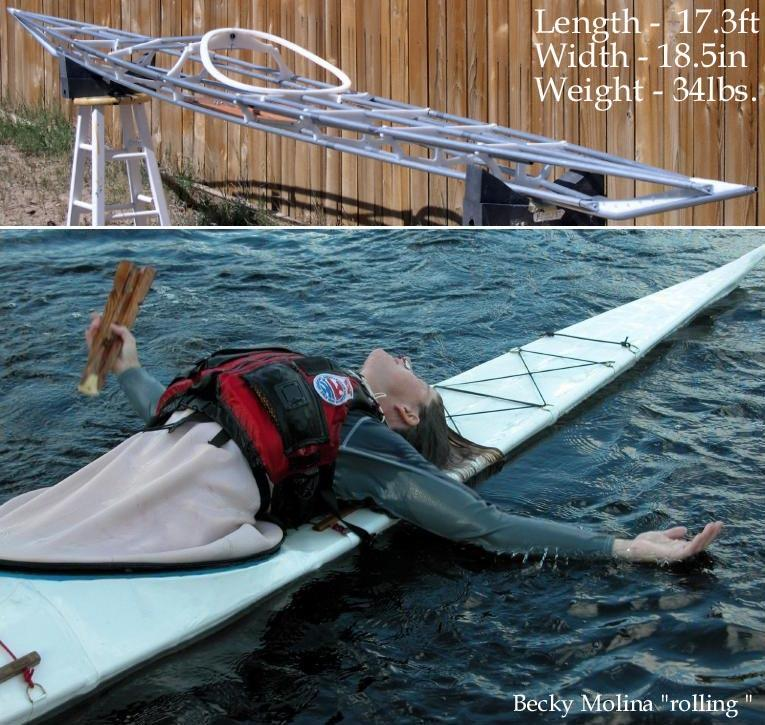

| Sea Rover, Sea Rover 2, Sea Rover LC, and Sea Rover ST | Menu Previous Page Next Page |
|

The Sea Rover and Sea Rover 2 are low volume folding Greenland "rolling" kayaks . Stability, though less than the Sea Rider and Sea ranger, is good. The Sea Rover has a 6.0in low deck and a 24 X 16in coaming. The Sea Rover 2 has a 5.75in low deck and a 22 X 16in coaming. The maximum designed paddler weight is 190lbs for the Sea Rover and 180lbs for the Sea Rover 2. Sea Rover and Sea Rover 2 Offsets are at the end of this section. Use the (BACK) key to return.
The Sea Rover LC is a large coaming version ( 30 X 16in) of the Sea Rover 2. The maximum designed paddler weight is 180 lbs. The Sea Rover LC Offsets are at the end of this section. Use the (BACK) key to return.
The Sea Rover ST is the "Sport Touring" version of the Sea Ranger LC with a taller flat aft deck 8in , and a more peaked forward deckridge. The taller deckridge provides greater gear storage aft and more foot room forward. The Sea Rover ST Offsets are at the end of this section. Use the (BACK) key to return. |
|